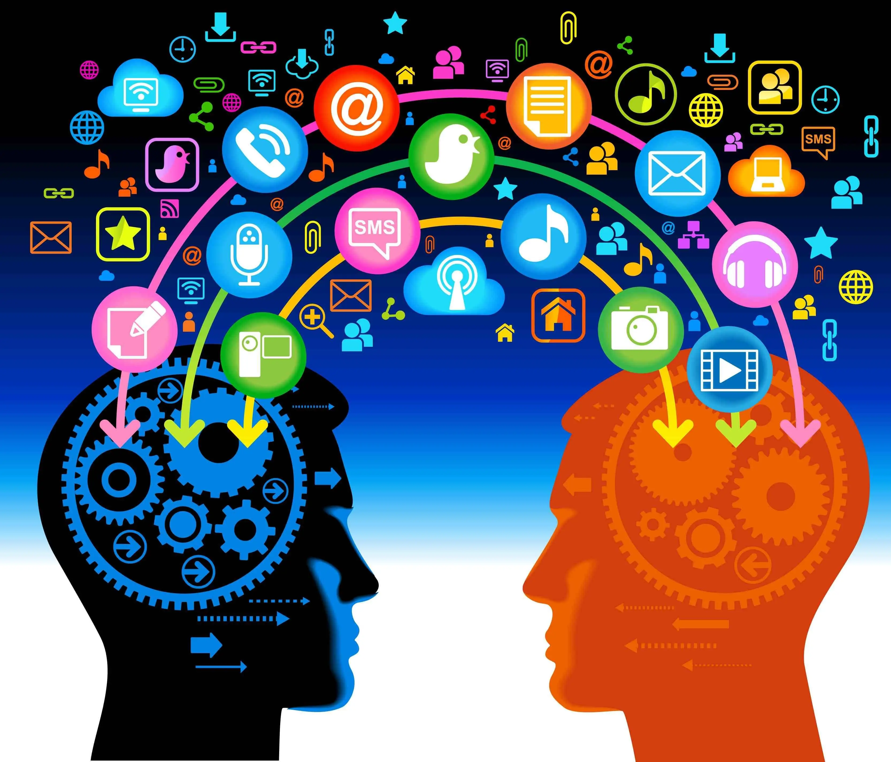
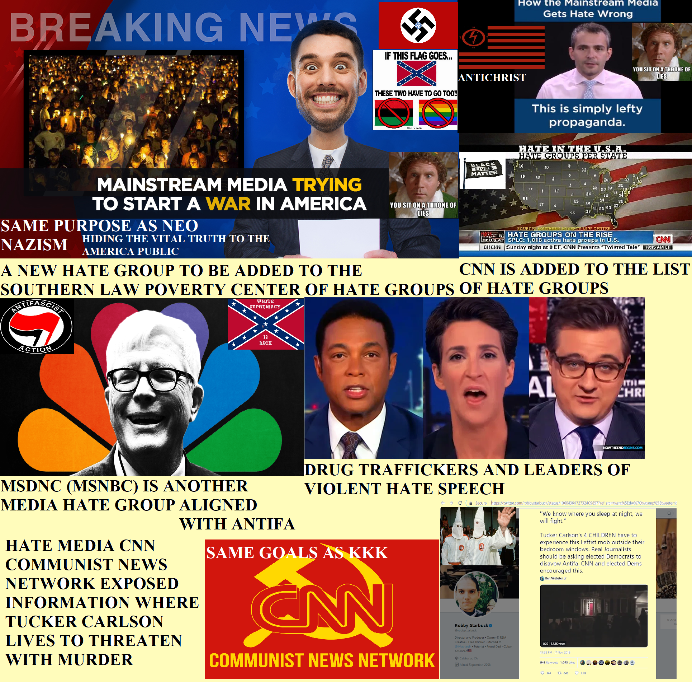

Media has become the lifeline of modern entertainment Industry. It not only provides information but also helps in the dissemination of ideas to every nook and corner of the globe. Medium of the media can be different such as TV, Radio, Newspapers or Internet, but they serve the same purpose. Billed as the powerful way of communication, media has its own advantages and disadvantages.
Media and society are important so we have some idea of what is going on behind the scenes and in the world. We need media to be there covering events. Having footage of, recording and documenting so we can see clearly for ourselves what is happening. And with society there would be no need for media. As a journalist I always tell people to be very vigilant and check multiple sources. Never just rely on one source for your news. The more sources, the more you read, the more you listen, the more your open to opinions of many the more you will grow and learn. We have to be open to new ideas and varying opinions to have a better understanding of things. Then we should formulate our own opinions. Once we know, have studied and learned about the issue or subject only then can we walk away informed and empowered.
Media has huge influence and ability to direct social tendencies. We may think we are independent but many studies prove that we are social beings, easily influenced by the opinions of others.
The problem with the media is not so much in its ability to influence its consumers, rather it is in the intention of its influence. Currently, the whole world operates according to egoistic laws. The media is a prime example of this. Everything it produces is meant to enrich the very few people who control it. If the intention was different, say, to cause positive social change and to bring about connection between people, then the media’s role would be completely reversed.
Positive Impacts Include:Media, in general, can be depicted in straightforward terms, similar to a film was acceptable, the book was tragic, or the Internet is educational, and how did we actually live without it! Clinicians, then again, take a gander at media from a hypothetical point of view by carrying social-psychological speculations to media (which recommends that people are proactively engaged with their turn of events, and can, in this way, practice authority over their sentiments, considerations, and activities).
Many negative impacts have been recorded, and kids frequently invest more energy sitting in front of the TV than on some other action. Be that as it may, if the TV time incorporates instructive programming and parent oversight, the force can be bridled to help with learning and have beneficial outcomes. In light of this, guardians must contemplate how their kids are expending television.the substance of media stories or online media posts can be valuable and important to youngsters. With stages like YouTube and Instagram, they approach individuals' accounts they may never have heard something else. Along these lines, teenagers may discover that numerous others are encountering comparable battles to their own, giving fortitude and certainty. Be that as it may, there are noteworthy negative impacts too.
Negative Impacts Include:A tool of hatred and domestic terrorism that they stir up. They are as the wicked every day plotting to slay to innocent. The wicked lie in wait for the righteous, intent on putting them to death through their incitement to violence on national and cable TV.
The Media is master of propaganda and is one of the devil’s greatest tools of deception. The Media blends the truth and lies together, sharing bits of truth and mixes in bits of lies and one arrives at a place where you are unable to separate the truth from the lies. Thru the devil’s influence they twist and pervert the principles of God.